0先了解：软件做什么、一天怎么干
COWMATA Annotator 把牛只佩戴的九轴（Motion）、PPG、温度数据和牛舍录像放在同一条时间轴上，由人看录像、在数据上标出动作（起立、躺卧、努责、产犊等），形成可训练算法的“真值”。
| 目录 | 放什么 |
|---|---|
| 1_下载器\<牧场> | 下载的原始数据：产犊 / 发情 / 怀孕 / 正常 / 疫病 / 待产犊 等类别下的 Motion、PPG、Temp，牧场根目录下的“录像”，以及“台账”。 |
| 2_标注器 | 标注软件与协作包：派出的原始数据包、收回的标注包在“科牧特_协作标注”。 |
| 3_训练器 | 模型与训练数据（自动标注模型默认从这里读取）。 |
| 4_决策器 | 实时决策器（下载时自动运行）。 |
1安装、登录与升级
安装
- 运行 COWMATA-Pro-4.4.3-Setup.exe，按提示安装。已装旧版的直接覆盖安装，账号、数据和设置都保留。
- 也可以用便携版：解压 COWMATA-Pro-4.4.3-Portable.zip，双击 COWMATA.exe。
登录

- 选择 操作员 或 管理员。
- 输入账号、密码。操作员在新电脑第一次登录时，还要填写管理员给的一次性密钥。
- 可勾选“记住密码 / 自动登录”（只在本机当前 Windows 用户下加密保存）。点 登录。
升级
帮助 → 关于 → 版本与更新…：自动检查 GitHub 发布页的新版本，下载后原地升级，不需要逐个安装旧版本，也不会强制关闭正在标注的工程。
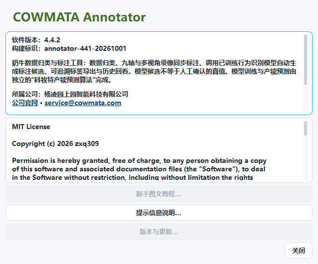
2认识主界面
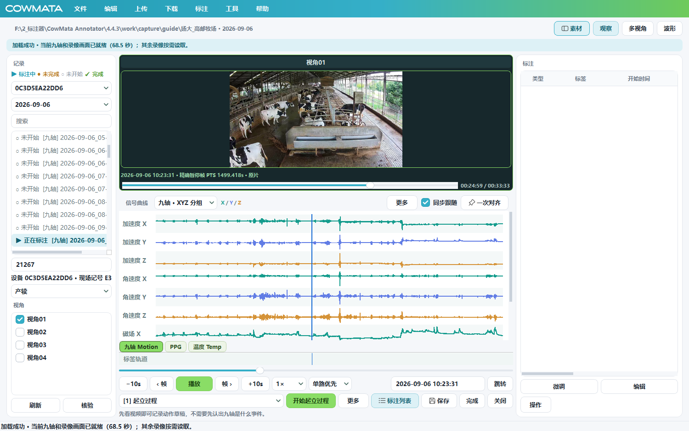
| 区域 | 作用 |
|---|---|
| 顶部菜单栏 | 文件、编辑、上传、下载、标注、工具、帮助（按一天的工作顺序排列）。 |
| 右上角四个按钮 | 素材：显示/隐藏左侧面板；观察：录像大、波形在下；多视角：同时看多路录像；波形：波形大、录像变画中画。 |
| 横幅（路径下方） | 最近一次操作的结果或原因，看不懂就查《提示信息说明》。 |
| 左侧“记录” | 设备、日期、搜索框和记录列表。▶ 标注中、● 未完成、○ 未开始、✓ 完成。下面是牛号框、设备信息、数据类别和“视角”勾选，底部 刷新、核验。 |
| 中间录像 | 当前主视角录像。暂停时显示“精确暂停帧 PTS … 原片”，代表画面已到位。 |
| 信号曲线 | 九轴 / PPG / 温度波形，蓝线是当前时刻。上方：曲线分组、更多、同步跟随、一次对齐。 |
| 标签轨道 | 已记录的动作色块。 |
| 播放栏 | −10s、‹帧、播放、帧›、+10s、倍速（0.25×–10×）、播放策略、日期时间 + 跳转。 |
| 标注栏 | 标签下拉框、开始/结束动作按钮、更多、标注列表、保存、完成、关闭。 |
| 右侧“标注” | 本份记录的视频草稿和标注（类型、标签、开始、结束、状态、备注），底部 微调、编辑、操作。 |
| 底部状态栏 | 索引状态，例如“按需待命 · 仅处理当前九轴所需录像”。 |
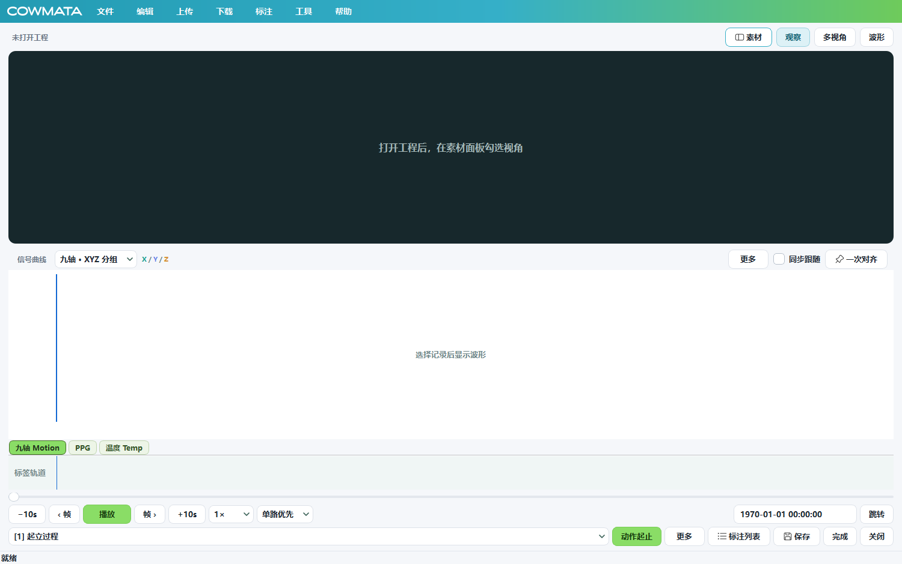
3七个菜单速查

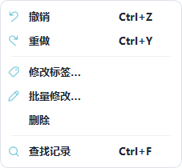
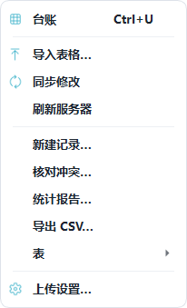
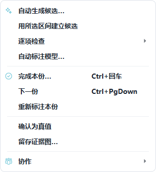
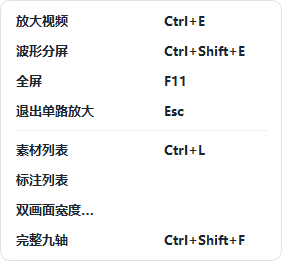
4打开工程
- 文件 → 打开工程…（Ctrl+O），选择牧场根目录（例如
F:\1_下载器\扬大_高邮牧场；选到“产犊”等类别文件夹也可以）。 - 在弹出的窗口确认牧场，选择 数据类别（产犊、发情…；怀孕还要选孕期阶段）、原始数据类型（全部 / 九轴 / PPG / 温度）和 采集日期（单选）。
- 点 确认牧场并打开该日。软件只清点文件，不会一次性读完全部录像，打开很快。
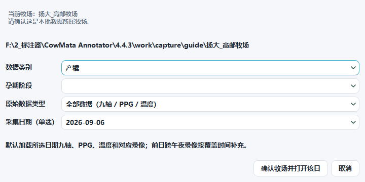
5选择记录与视角
- 左侧上方选择设备和日期（“全部日期”包括跨午夜的记录），可在搜索框按时间搜索；Ctrl+F 直接跳到搜索框。
- 点一条记录（每条约 30–40 分钟）。软件在后台读取九轴，并只检索这段时间需要的录像。
- 核对牛号框（例如 21267），不对就改正并按回车。确认真值必须有牛号。
- 在“视角”里勾选能拍到这头牛的视角（一次最多 8 路）。悬停视角名可以看到该视角的录像覆盖情况。
6一次对齐（每份记录做一次）
九轴和相机的时钟各走各的。软件会先按设备采集时间自动联动，但要确认真值，每份记录需要人工“一次对齐”。
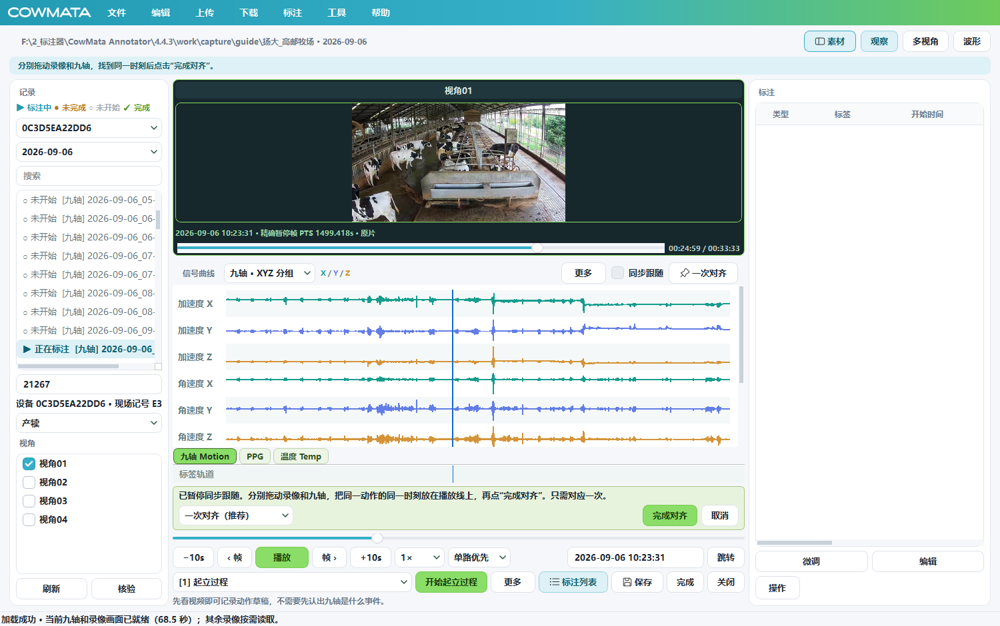
- 点波形右上角 一次对齐。
- 找一个明显的瞬间（例如牛起身、甩头），拖动录像和拖动九轴，让同一瞬间都落在播放线上。
- 等画面到位后点 完成对齐。之后按钮变为“重新对齐”，同步跟随自动恢复。
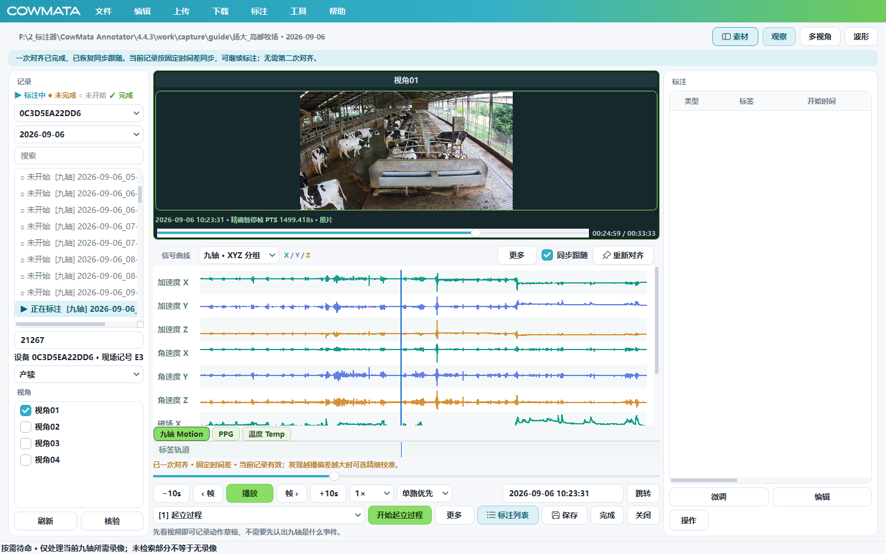
7播放与定位
| 操作 | 说明 |
|---|---|
| 播放 / 暂停 | 点“播放”或按空格。暂停后自动读取精确暂停帧，画面下方出现“精确暂停帧 PTS … · 原片”就是画面到位。 |
| −10s / +10s | 前后跳 10 秒。 |
| ‹帧 / 帧› | 前后一帧，用于找准动作起止。 |
| 倍速 | 0.25×、0.5×、1×、2×、4×、8×、10×。只看一个视角时可用 8×/10× 快速浏览；高倍速下原片可能跳帧，核对时请暂停或降速。 |
| 播放策略 | 单路优先（默认，只播主视角，其他视角显示暂停图，最流畅）、流畅优先、多路全速。 |
| 跳转 | 在右下输入 2026-09-06 10:23:31（也接受 10_23_31），按回车或点“跳转”。 |
| 点波形 | 开启“同步跟随”时，点波形任意位置，录像跟着跳过去。 |
| 暂停再播放 | 从你看到的那一帧继续播放，不会往回跳几秒（4.4.2 修复）。 |
| 跨录像连续播放 4.4.4 | 一段录像播完、九轴还没完时自动接到下一段录像继续播放，不用再拖九轴：两段之间只隔几秒（换文件、录像机断流重连）会自动跳过；下一段还没建好索引时会先暂停并在后台优先索引它，画面到位后自动继续；只有真的长时间没有录像时才停下，并提示下一段从几点开始（可点“下一录像时段”）。 |
8记录动作：标签开始 → 标签结束 → 完成4.4.4
- 在标注栏的下拉框选择标签，例如 [1] 起立过程（方括号里是快捷键）。
- 播放到动作开始的画面并暂停，等画面到位，点 开始起立过程（或按 1）。
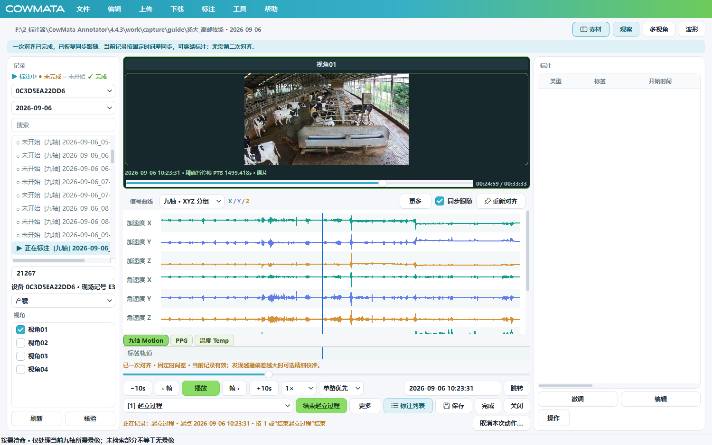
- 播放到动作结束的画面并暂停，再点 结束起立过程（或再按一次 1）。
- 完成。右侧直接出现一条 九轴标注 · 已确认，下方提示“已完成：起立过程（起止时间）已确认为九轴真值”。不用再“补充证据”、不用截图、也不用再点“确认真值”——记录开始和结束时屏幕上的原片画面就是证据。需要时可编辑、删除或按 Ctrl+Z 撤销。
- 点事件（只有一个时刻的标签）按一次就记录。
- 记错了：点“取消本次动作”，或之后在右侧删除。
- 也可以在波形上拖选一段，再点 标注 → 用所选区间建立候选。
9什么时候还要“确认真值”
4.4.4 正常标注不需要这一步：标签结束即自动确认。只有留成“视频草稿 · 九轴待确认”的条目（未对齐、录像时间未核验、牛号未确认）以及导入的旧标注，才需要按下面的步骤确认。确认需要：牛号正确、已对齐、画面到位、录像时间已核验。
- 在右侧选中一条草稿（或旧标注），双击它，视频跳到动作开头。
- 等画面到位，点 操作 → 确认真值（或 标注 → 确认为真值）。
- 成功后状态变为 已确认（4.4.4 起不再弹出证据截图窗口）。
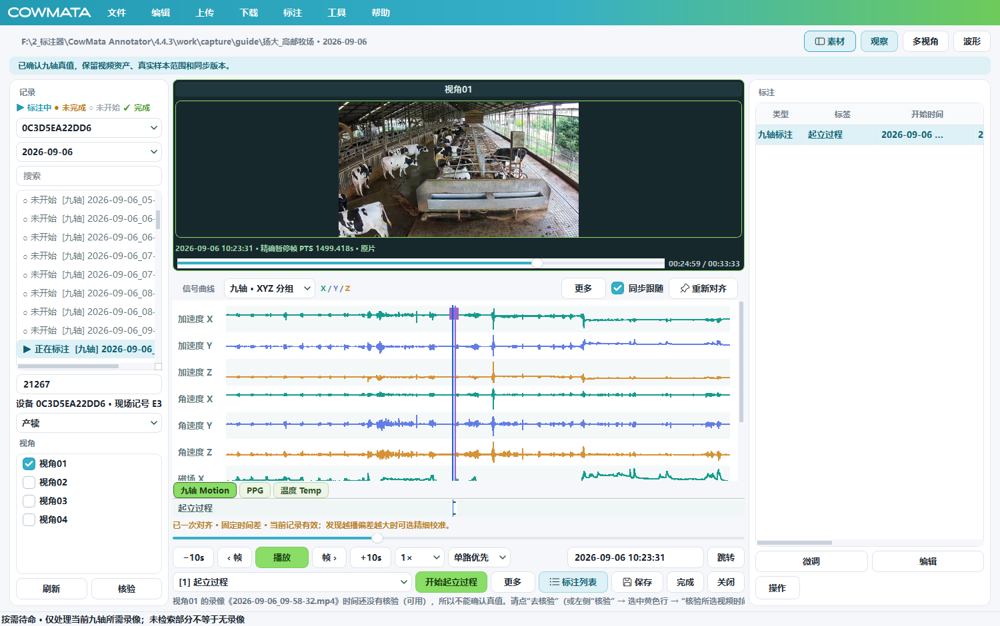
4.4.3 起更省事新
- 点确认时视频不在这条动作上，软件先自动跳过去，等画面到位后再点一次即可。
- 旧标注（导入的旧工程、协作回传、模型生成的标签）不用再“建立视频草稿”：双击回到动作，等画面到位后直接点“确认真值”，一步完成，保留原编号和备注，可撤销。
- 确认不了时，提示会写明原因：画面还在加载、哪个视角的哪个录像时间没核验、校准被修改、文件变了等。
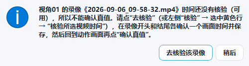
证据截图（可选，4.4.4 起不再是标注步骤）
复核时看录像本身就够了，所以截图已从标注流程中去掉。仍需要给某条标注留图的，可在 工具 → 旧版兼容 → 证据截图（可选）… 打开；以前保存的证据图也在这里查看。
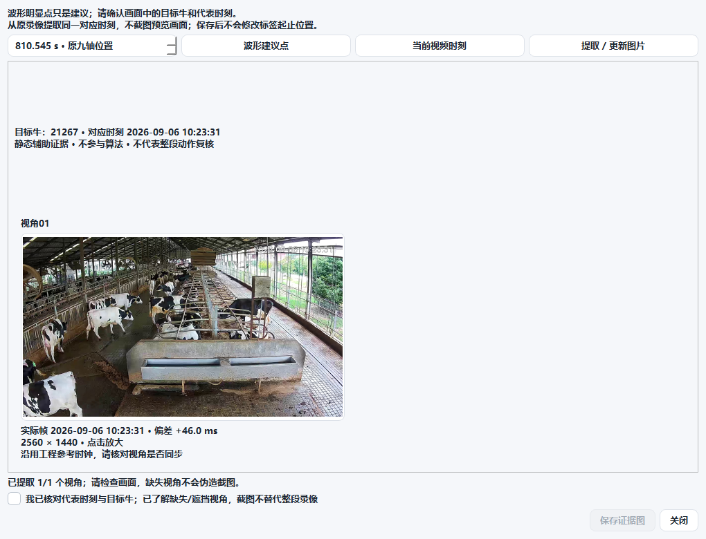
10录像时间核验（黄色行）4.4.3 重做
软件要确认“录像画面上的时间”和九轴时间对得上，才允许确认真值。大部分录像会自动核验（读取文件名和录像机自带时钟）；只有时钟跳变、断流或读不出时钟的录像需要人工核验，它们显示为黄色行。4.4.4 录像机在一段录像中途断流重连（流内时间从 0 重新开始，例如高邮牧场视角02 约每 17 分钟一次，每次缺约 12.6 秒）现在也按录像机自带时钟自动核验，不再显示为过短的录像、也不再出现“无法解码所选位置真实画面”。
找到需要核验的录像
- 点左侧底部 核验（或 工具 → 录像 → 素材核验…）。
- 默认显示 当前记录用到的录像：黄色行就是需要核验时间的，排在最前面。
- 上方“显示”可以切换：需要核验时间的录像（整个工程）、全部录像、全部素材。
- 定位当前画面录像：一键选中主视角正在播放的那段录像。
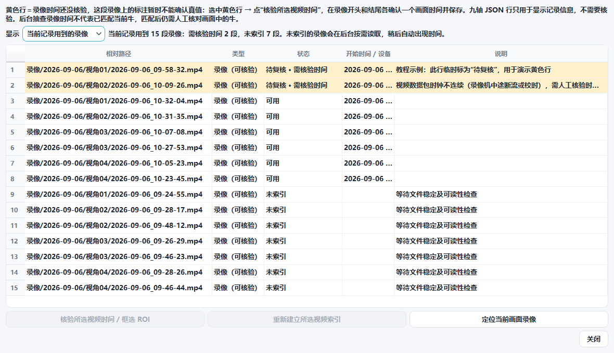
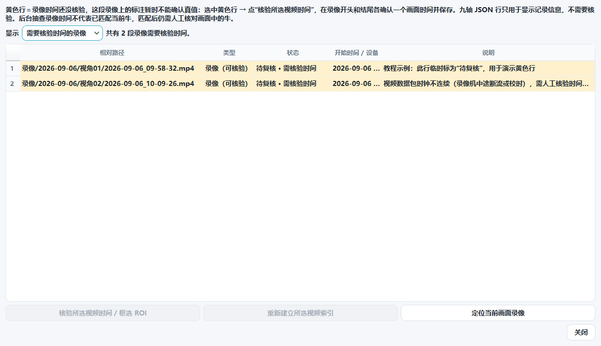
核验一段录像（约 1 分钟）
- 选中黄色行，点 核验所选视频时间 / 框选 ROI（或直接双击黄色行）。
- 点 读取开头画面。“画面读数”会按文件名时间预填。
- 对照画面上的时间水印逐字核对（含日期），不一致就改成画面上的时间，点 确认当前读数。
- 点 读取结尾画面，同样核对后点 确认当前读数。
- 下方显示“第 x 秒到第 y 秒之间算已核验（约占全片 100%）”后，点 保存。
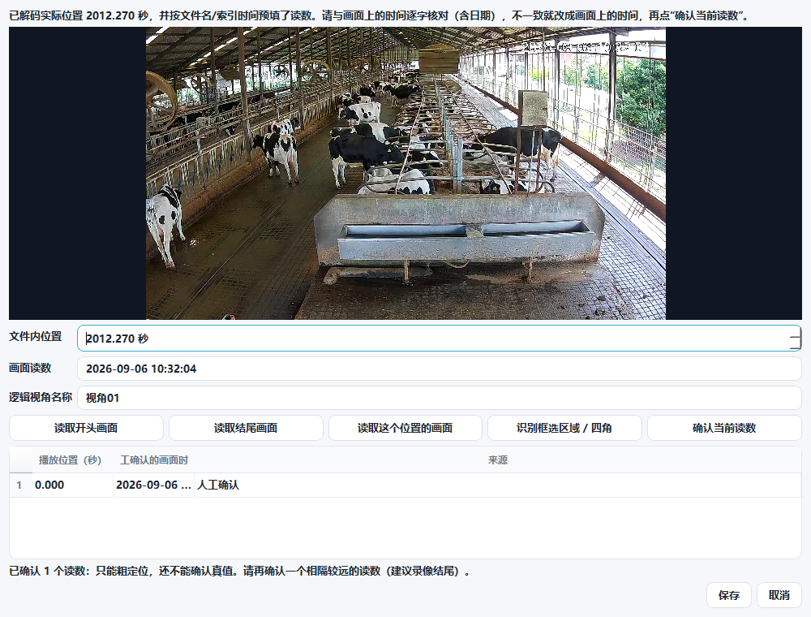
| 状态 | 含义 |
|---|---|
| 可用 | 时间已核验，可以直接确认真值。 |
| 待复核 · 需核验时间 | 黄色行，按上面步骤核验。 |
| 未索引 | 还没读出时长，不等于损坏。先在主界面选对应记录，或点“重新建立所选视频索引”。 |
| 异常 / 缺失 | 文件坏了或被移走，重新下载或刷新。 |
| 九轴 JSON（信息项） | 只用于显示记录信息，不需要核验。 |
11修改、删除、完成本份
编辑与微调
- 编辑（右侧按钮或 编辑 → 修改标签…）：改标签、起止时间和备注。
- 微调：在波形上拖动草稿的左右边界。
- 编辑 → 批量修改…：多选后一次改成同一标签（点事件和区间不能互换）。
- 删除：编辑 → 删除，可以 Ctrl+Z 撤销。
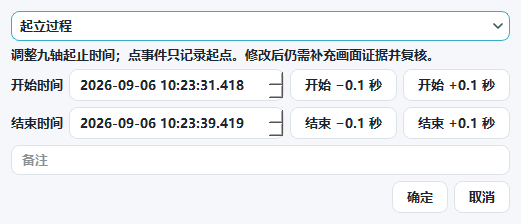
完成本份
- 本份记录标完后点 完成（Ctrl+Enter），确认保存并标为已完成。
- 标注 → 下一份（Ctrl+PgDown）跳到下一份未完成记录；重新标注本份可把已完成改回进行中。
12布局、画中画与设置
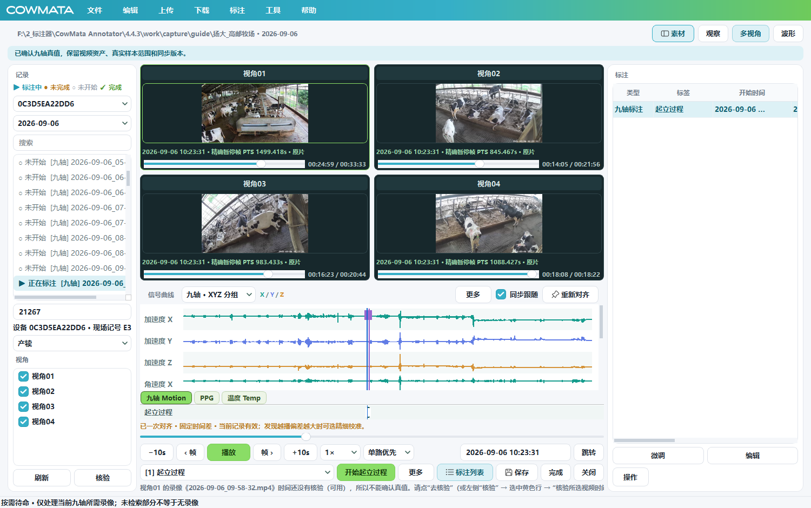
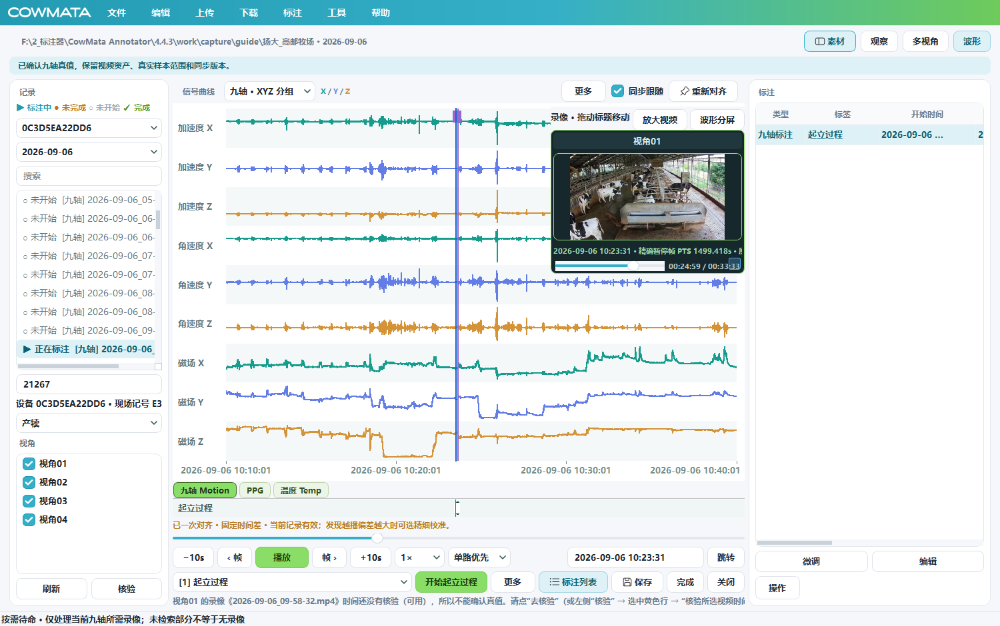
- 画中画：拖动标题移动位置，双击放大；拖动右下角可以自由调整大小（4.4.2 新增，自动记住为“画中画 · 自定义”）。
- 放大视频（Ctrl+E）：录像占满，波形留窄条；波形分屏（Ctrl+Shift+E）：把波形拖到第二个屏幕；全屏 F11。
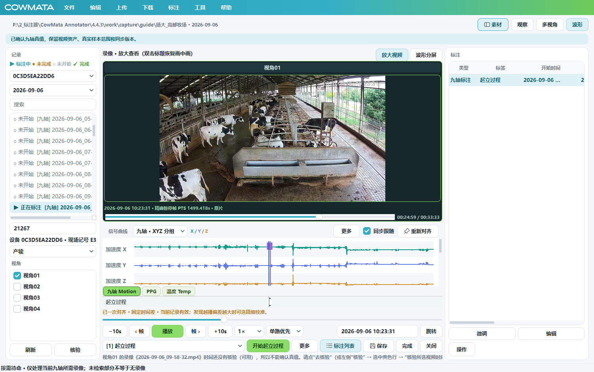
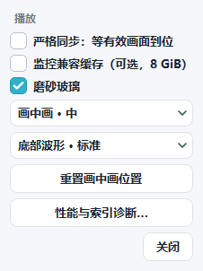
13自动候选与逐项检查
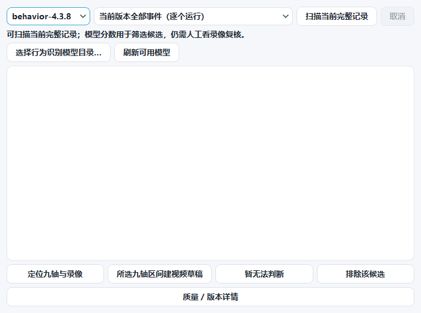
- 扫描后列出候选位置和分数。双击候选或点“定位九轴与录像”，看录像判断。
- 动作确实存在：在波形上拖选真实起止，点“所选九轴区间建视频草稿”，再按第 9 章确认。
- 看不清点“暂无法判断”，不是该动作点“排除该候选”。
- 标注 → 自动标注模型…：选择行为识别模型目录（默认
3_训练器\产犊\模型\<版本>\行为识别）。 - 标注 → 逐项检查：按单个行为（起立、努责、排尿…）用模型单独检查；“返回标注”回到主界面。
14导出与历史回看
| 菜单 | 作用 |
|---|---|
| 文件 → 导出 → 完整成果… | 把当前记录的标注保存成一个 .标注.json（含证据图），可放任意位置。 |
| 文件 → 导出 → 所选片段… | 先在波形上拖选一段，只导出这段（含标签）。 |
| 文件 → 导出 → 训练数据… | 批量导出训练与兼容格式（只含已确认真值；未确认、未看过的样本不会当成负样本）。 |
| 文件 → 历史回看… | 只读打开导出的标注文件，核对标签与录像（Ctrl+Shift+O）。 |
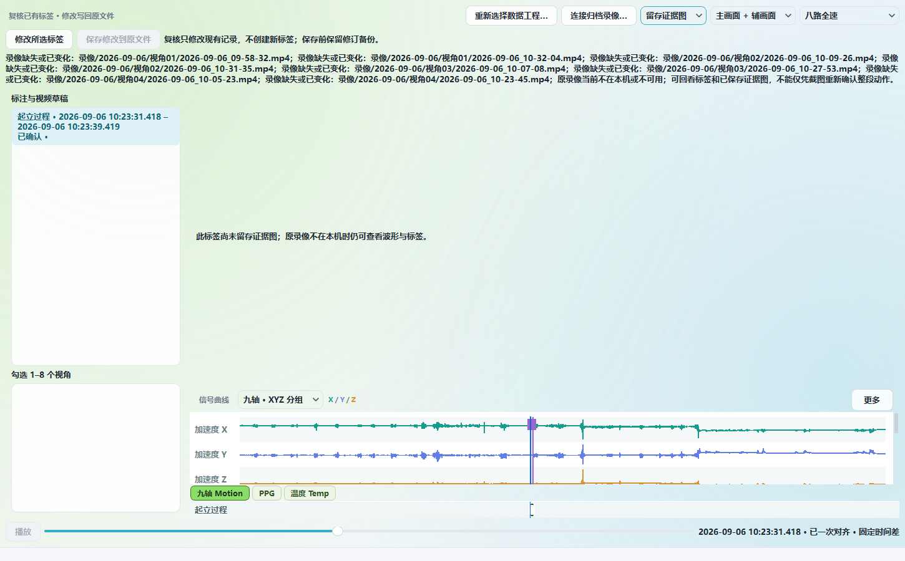
15协作：派包、回传、接收
一个人“派包”（把原始数据分给多人），标注人员“打开协作数据包”标注后“生成标注数据包”，派包人“接收标注数据包”。
派发原始数据包（派包人）
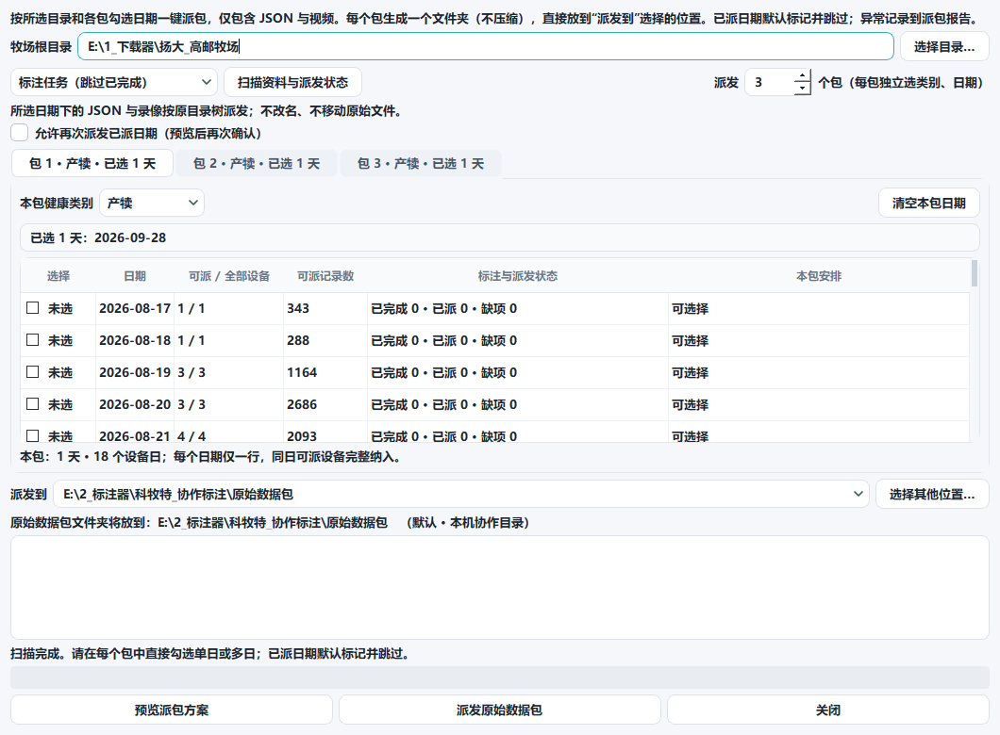
- 确认牧场根目录，选择用途：标注任务（跳过已完成）或复核任务。
- 设置派发几个包；每个包选择健康类别，勾选日期（单日或多日）。已派过的日期默认标记并跳过。
- 可先点 预览派包方案，再点 派发原始数据包。进度显示速度和剩余时间。
- 4.4.5：每个包是一个文件夹（不压缩），直接生成到“派发到”选的位置：默认
<盘>\2_标注器\科牧特_协作标注\原始数据包，下拉还列出移动硬盘、名字带“派包 / 转移 / 协作”的文件夹和最近用过的位置，也可“选择其他位置…”。完成后写“派包报告”。
打开协作数据包（标注人员）
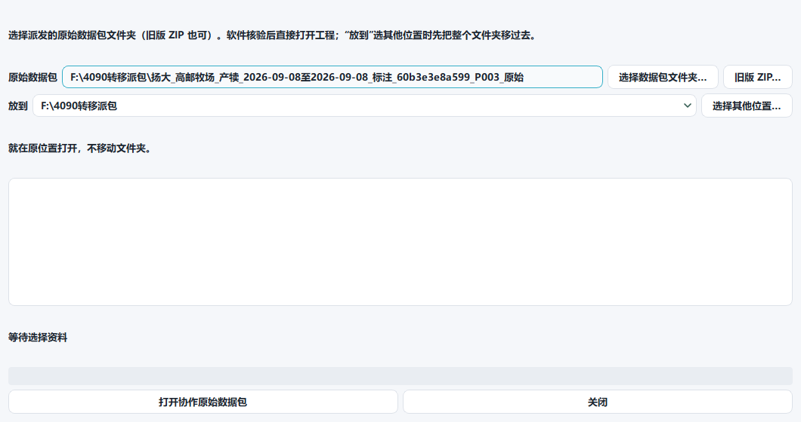
…_原始 文件夹（旧版 ZIP 也可）；“放到”选原位置就地打开，选本机其他位置则先把整个文件夹移过去，核验后直接打开工程。生成标注数据包（标注人员）
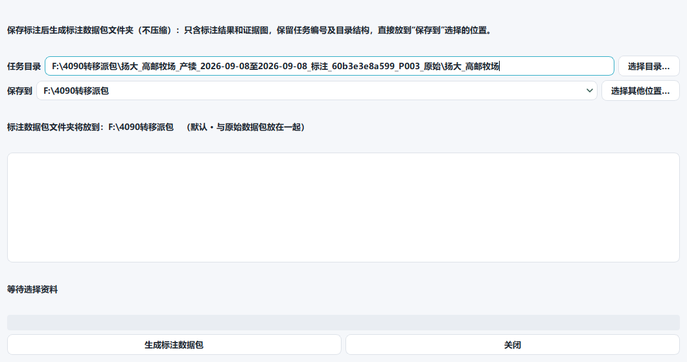
…_标注_<编号> 文件夹，放到“保存到”选的位置（默认与原始数据包放在一起），交回派包人。接收标注数据包（派包人）
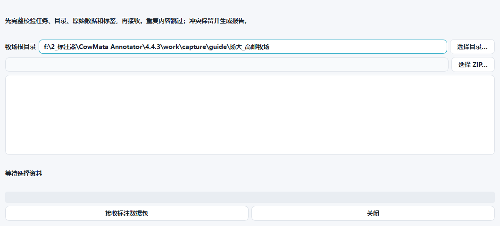
接收成果… / 回传设置…：按文件夹自动接收多人回传的 JSON（老流程），在回传设置里指定专用回传文件夹。
16上传台账（上传 → 台账，Ctrl+U）
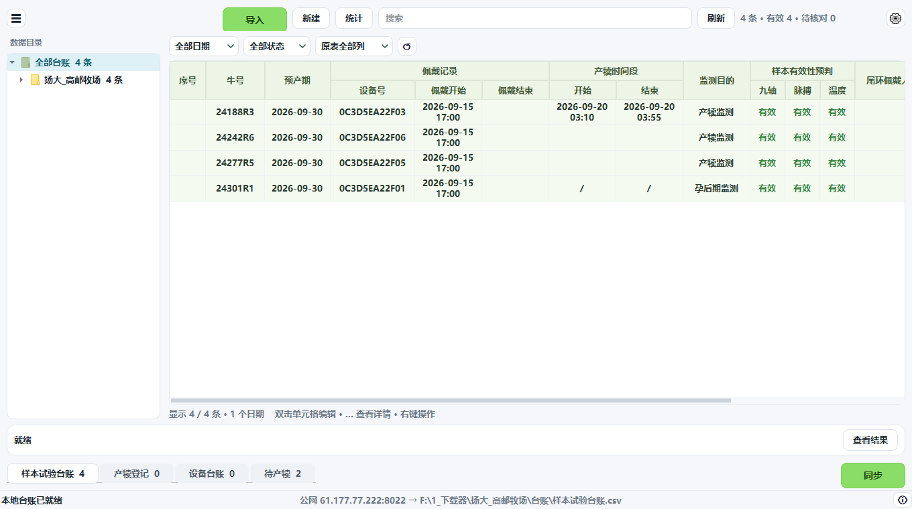
- 导入：选择 Excel 或 CSV。软件兼容原表格式，新增、更新、重复分别统计。
- 核对表格：双击单元格修改，右键更多操作，“…”查看详情。
- 同步：上传到服务器（SSH 加密、增量）。
- 底部四张表：样本试验台账、产犊登记、设备台账、待产犊。
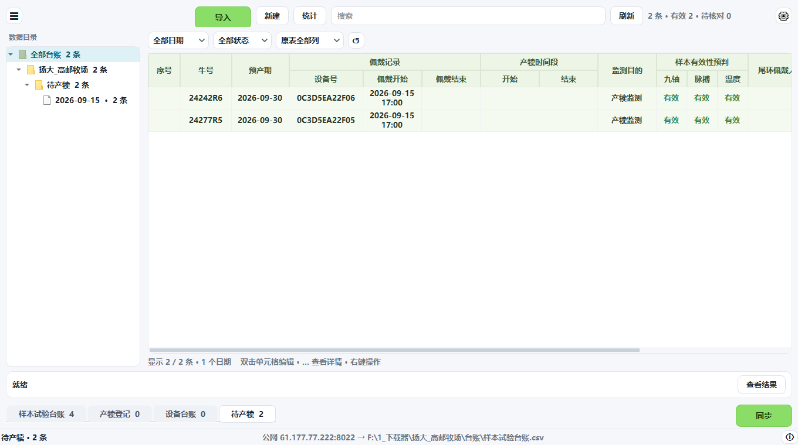
| 产犊开始 / 结束 | 自动归类 |
|---|---|
| 都为空 | 待产犊（尚未产犊） |
| 时间在佩戴期内 | 产犊 |
| 填“/”，或产犊在拆除设备之后 | 孕晚期 |
| 只填一项、先后颠倒、格式错误；死胎 / 难产 / 产后监测却没填时间 | 待核对 |
其他命令：同步修改、刷新服务器、新建记录…、核对冲突…、统计报告…、导出 CSV…、表（直接打开某张表）、上传设置…。
17下载与数据归类
端侧数据（下载 → 端侧数据…，Ctrl+D）
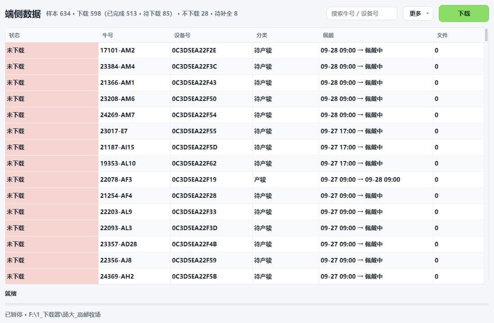
- 点 下载：下载到当前时刻，每轮结束 1 分钟后自动继续；点 暂停：停止并删除未完成的临时文件，再点下载从断点继续。
- 每轮开始先核对待产犊：台账补上产犊时间的，文件立即移到产犊或孕晚期。
- 下载时自动运行 5_正向决策器 的实时推理；下载 → 风险等级总览 查看风险等级与监测报告。
- 更多里可重新下载所选记录；下载 → 下载记录 查看运行记录、问题清单、备注；检测连接 检查服务器和数据接口；下载设置… 需先暂停。
数据归类（下载 → 数据归类）
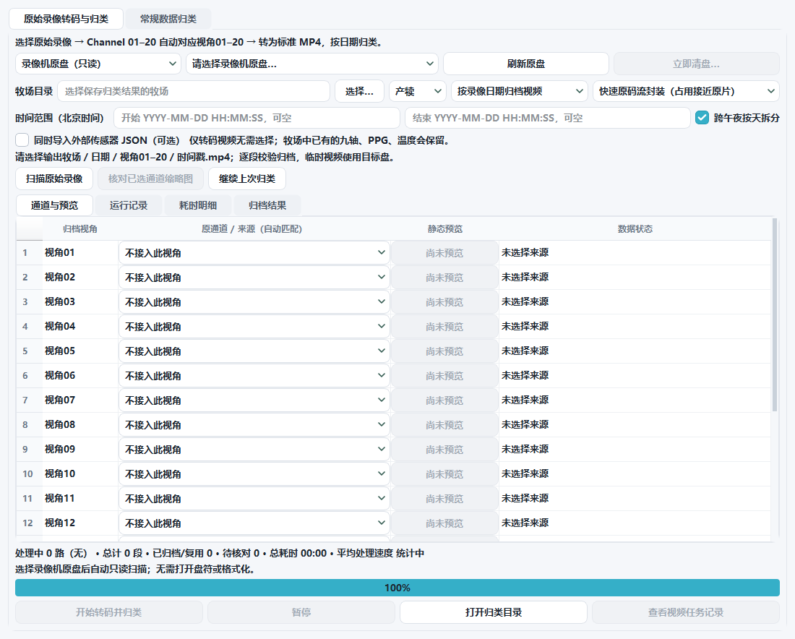
- 录像转码与归类…：选择录像机原盘（只读）和牧场目录，扫描后选择通道与时间范围，点“开始转码并归类”。可同时导入外部传感器 JSON。
- 常规归类…：把零散的九轴、视频按类别和日期放进规范目录（先审查、再预览、最后一键执行）。
- 继续上次归类：中断后续传；归类记录…：查看原因；打开归类目录。
18工具菜单
时间同步
- 精细校准…：越播越偏时，在离原对应点较远处再加对应点；也可以标出“未确认的九轴区间”（不跨这些区间确认真值）。
- 相机校准…：校准当前主视角相机时钟（一般不用）。
- 下一录像时段：跳到下一个有录像的时段。
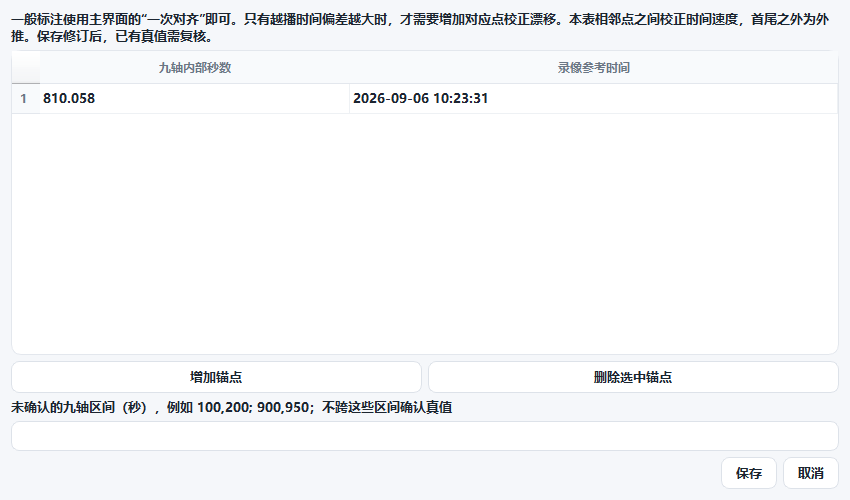
录像
| 命令 | 作用 |
|---|---|
| 统一录像目录… | 把分类下旧的 Video 移到牧场根目录“录像”，并更新标注引用（先保存关闭工程、暂停下载）。 |
| 导出标准 MP4… | 把当前录像导出为通用 MP4（原件不动）。 |
| 刷新素材 F5 | 复制完新文件后重新核对。 |
| 扩大检索 | 当前时刻找不到录像时，扩大检索范围。 |
| 完整索引… | 后台索引整个工程（可选、耗时）。 |
| 暂停检索 | 暂停后台检索。 |
| 素材核验… | 打开核验窗口（同左侧“核验”，见第 10 章）。 |
| 新建拷贝批次… | 为同一视角的新一次导出建立独立批次，不覆盖旧批次。 |
| 内容核验… | 全文件内容校验（耗时）。 |
| 归档核验… | 核对录像归档副本，不删除原片。 |
视图与其他
- 视图：放大视频、波形分屏、全屏、退出单路放大（Esc）、素材列表（Ctrl+L）、标注列表、双画面宽度、完整九轴（Ctrl+Shift+F）。
- 性能诊断…：查看解码、索引耗时，排查卡顿。
- 切换硬件解码：卡顿或花屏时切换，下次打开工程生效。
- 旧版兼容：导入旧单视频工程、打开旧版单视频窗口。
19帮助、账号与关于
- 快速开始（F1）：五步速记。
- 新手图文教程…：本教程。
- 提示信息说明…4.4.3：每条常见提示的原因和处理办法，可输入关键字筛选。
- 账号 → 用户与密钥…（管理员）：添加用户自动生成 8 位密码和一次性密钥（已复制），把三项发给本人；密钥只用于首次激活电脑。
- 关于：版本号、版本与更新、许可证。
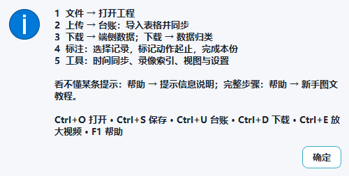
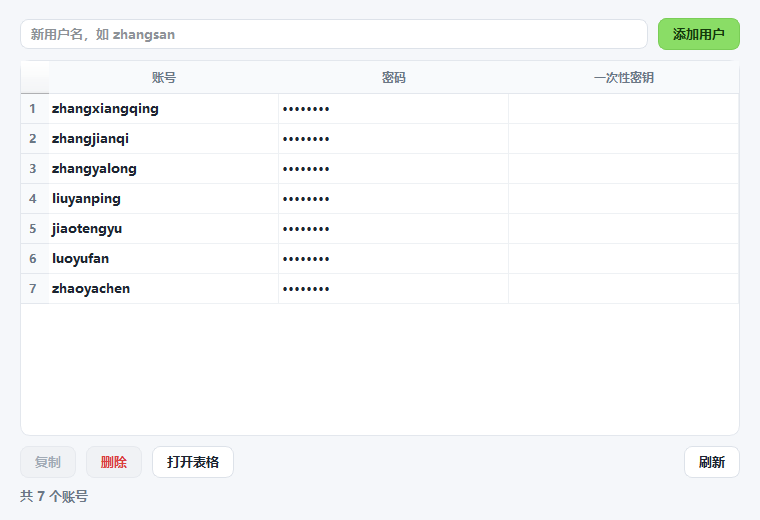
20快捷键
| 快捷键 | 功能 | 快捷键 | 功能 |
|---|---|---|---|
| Ctrl+O | 打开工程 | Ctrl+J | 打开九轴 |
| Ctrl+S | 保存 | Ctrl+W | 关闭工程 |
| Ctrl+Z / Ctrl+Y | 撤销 / 重做 | Ctrl+F | 查找记录 |
| Ctrl+Enter | 完成本份 | Ctrl+PgDown | 下一份 |
| Ctrl+U | 台账 | Ctrl+D | 端侧数据下载 |
| Ctrl+E | 放大视频 | Ctrl+Shift+E | 波形分屏 |
| F11 | 全屏 | Esc | 退出单路放大 |
| Ctrl+L | 素材列表 | Ctrl+Shift+F | 完整九轴 |
| F5 | 刷新素材 | Ctrl+, | 设置 |
| Ctrl+Shift+O | 历史回看 | F1 | 快速开始 |
| 1…9 等 | 标签快捷键（见标签下拉框方括号） | Ctrl+Q | 退出 |
| 空格 | 播放 / 暂停 | [ / ] | 后退 / 前进一帧 |
| ← / → | 后退 / 前进 0.1 秒 | Alt+1…8 | 切换主视角 |
| Ctrl+Alt+0 | 一次对齐 |
21常见问题
等画面到位后还是确认不了？
看提示里写的原因（4.4.3 起会写明）。最常见的是这段录像的时间没核验：点“去核验该录像”，开头、结尾各确认一个读数后保存（第 10 章）。
视频播完了九轴还没完，为什么停了？
4.4.4 起会自动接到下一段录像继续播放；下一段还在建立索引时，提示“下一段录像正在建立索引；画面到位后会自动继续播放”，等几秒即可，不用拖九轴。只有长时间确实没有录像才会停，并告诉你下一段从几点开始。
核验时“读取结尾画面”提示无法解码？
这类录像多数并没有损坏，而是录像机中途断流重连、流内时间重新从 0 开始。4.4.4 已能按录像机时钟读取这类录像的任意位置；升级后软件会自动为它们重建一次索引（人工标注保留）。
“旧标注需先建立视频草稿”怎么办？
4.4.3 起不用建立：双击旧标注回到动作，等画面到位，直接点“确认真值”。
列表里找不到要核验的是哪个？
左侧“核验”默认只列当前记录用到的录像，黄色行就是；也可切换“需要核验时间的录像”，或点“定位当前画面录像”。九轴 JSON 不需要核验。
画面一直出不来？
确认勾选的视角在这一时刻有录像；用“工具 → 录像 → 扩大检索”；同时播放路数太多时改为“单路优先”。
派包会不会被下载卡住？
不会。下载、派包、标注可以同时进行；正在写入的文件会跳过并写入派包报告。
界面按钮是英文？
4.4.3 起，“保存 / 取消 / 关闭 / 是 / 否”等系统按钮也显示中文。
更多提示的含义和处理办法：《提示信息说明与处理办法》。